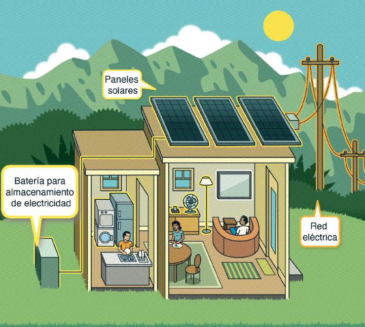
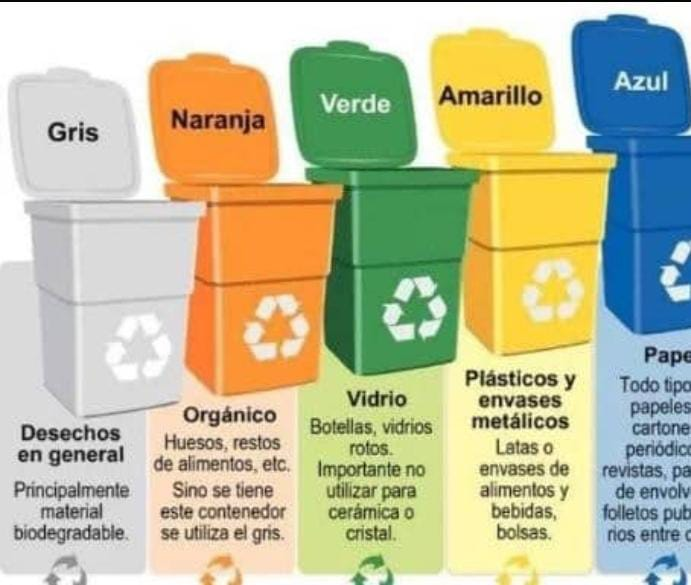
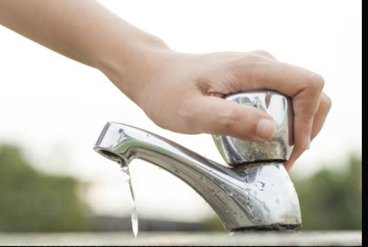

Sobre las imágenes: las diez fotografías de Wikimedia Commons se muestran desde sus servidores y necesitan conexión. Si no cargan, aparece una ilustración de respaldo. Las fotografías de árboles, residuos y compostaje no representan actividades realizadas por las estudiantes, sino ejemplos educativos.





Mostrando 13 imágenes.